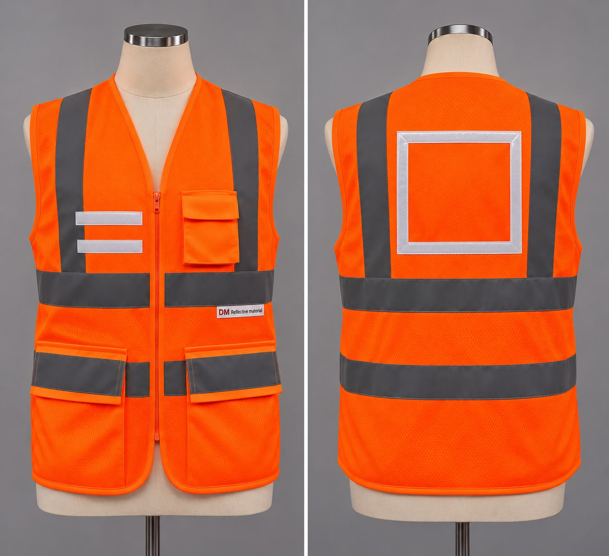
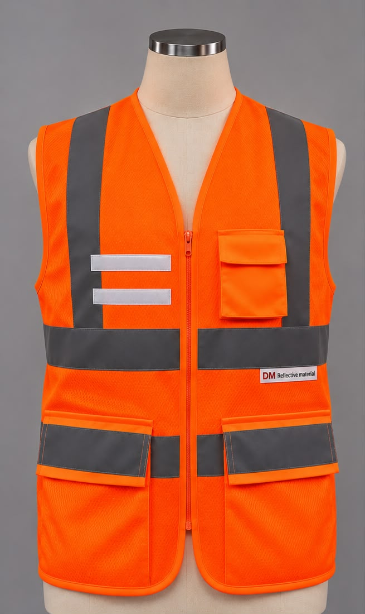
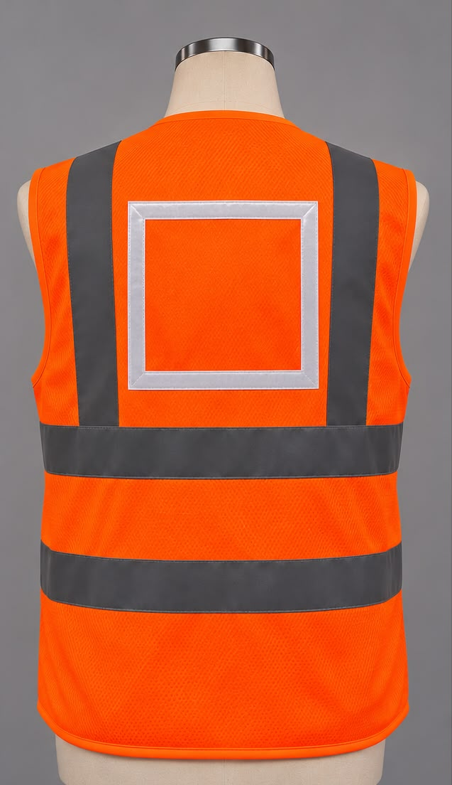
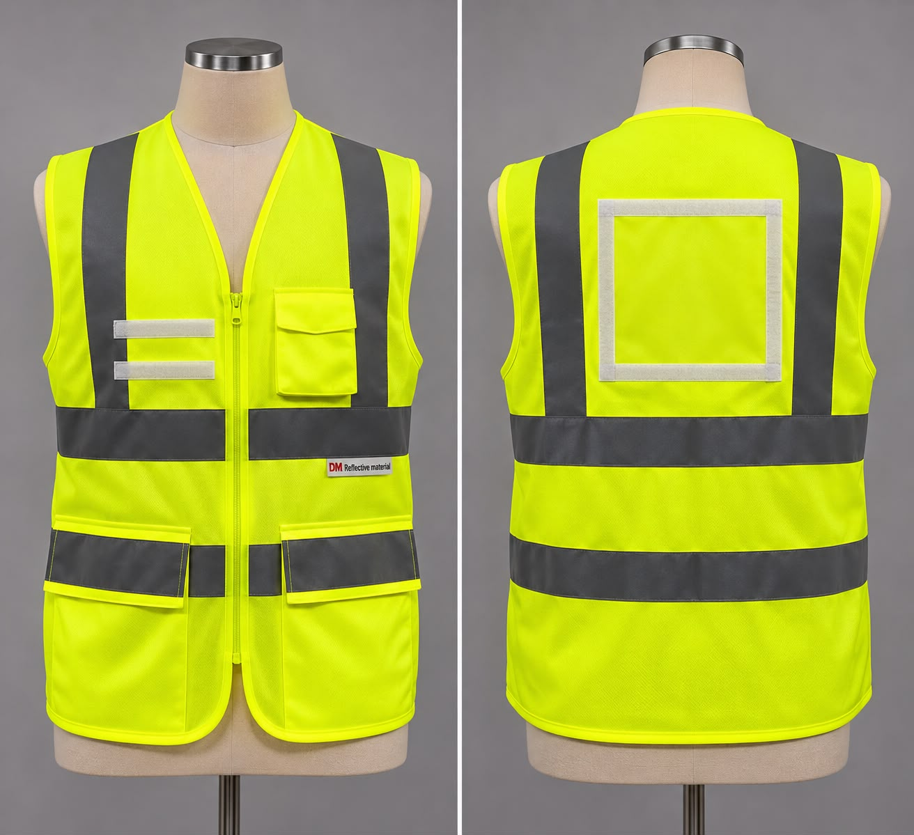

Colete Aeroportuário
Colete Refletivo com Velcro para Placas de Identificação
Colete refletivo de alta visibilidade desenvolvido para operações aeroportuárias, com sistema de fixação por velcro para placas de identificação frontal e traseira.
O sistema de velcro permite a fixação e substituição das placas de identificação conforme a necessidade de cada operação, proporcionando praticidade na identificação dos profissionais.
Possui fechamento frontal em zíper, faixas refletivas, reunindo características funcionais para o uso em ambientes operacionais.
- • Tecido fluorescente de alta visibilidade
- • Cores: amarelo-esverdeado fluorescente e laranja-avermelhado fluorescente
- • Faixas refletivas frontais e traseiras
- • Fechamento frontal com zíper
- • Sistema de fixação por velcro para placas de identificação
- • Área frontal para identificação: 6 × 13 cm
- • Área traseira para identificação: 20 × 20 cm
- • Acabamento em viés
Especificações Técnicas
Modelo
Colete Refletivo Aeroportuário com Velcro para Placas de Identificação
Referências normativas
ABNT NBR 15292, EN ISO 20471 e ANSI/ISEA 107
Material
Tecido fluorescente com elementos retrorrefletivos
Cores disponíveis
Amarelo-esverdeado fluorescente e laranja-avermelhado fluorescente
Fechamento
Zíper frontal
Sistema de identificação
Fixação por velcro frontal e traseiro
Identificação frontal
6 × 13 cm
Identificação traseira
20 × 20 cm
Elementos refletivos
Faixas retrorrefletivas frontais e traseiras